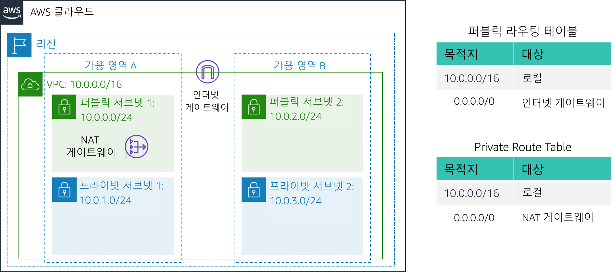

실습 2: VPC 구축 및 웹 서버 시작
버전 4.6.6(TESS1)
이 실습에서는 Amazon Virtual Private Cloud(VPC)를 사용하여 자체 VPC를 생성하고 구성 요소를 추가하여 사용자 지정된 네트워크를 생성합니다. 또한 EC2 인스턴스에 대한 보안 그룹을 생성합니다. 그런 다음 웹 서버를 실행하고 VPC에서 시작하도록 EC2 인스턴스를 구성하고 사용자 지정합니다.
Amazon Virtual Private Cloud(Amazon VPC)를 사용하면 사용자가 정의한 가상 네트워크에서 AWS(Amazon Web Services) 리소스를 시작할 수 있습니다. 이 가상 네트워크는 고객의 자체 데이터 센터에서 운영하는 기존 네트워크와 매우 유사하며, AWS의 확장 가능한 인프라를 사용한다는 이점이 있습니다. 여러 가용 영역에 걸쳐 있는 VPC를 생성할 수 있습니다.
시나리오
이 실습에서는 다음과 같은 인프라를 구축합니다.

목표
본 실습을 완료하면 다음을 할 수 있습니다.
- VPC 생성.
- 서브넷 생성.
- 보안 그룹 구성.
- VPC에서 EC2 인스턴스 시작.
소요 시간
이 실습은 완료까지 약 30분이 소요됩니다.
AWS Management Console 액세스
지침의 맨 위에서 Start Lab을 클릭하여 실습을 시작합니다.
Start Lab 패널이 열리고 실습 상태가 표시됩니다.
“Lab status: ready” 메시지가 표시되면 X를 클릭하여 Start Lab 패널을 닫습니다.
지침의 맨 위에서 AWS를 클릭합니다.
그러면 새 브라우저 탭에서 AWS Management Console이 열립니다. 시스템에서 자동으로 로그인합니다.
팁: 새 브라우저 탭이 열리지 않는 경우 일반적으로 브라우저에서 팝업 창을 열 수 없음을 나타내는 배너 또는 아이콘이 브라우저 상단에 표시됩니다. 배너 또는 아이콘을 클릭하고 Allow pop ups를 선택합니다.
이러한 지침이 나란히 표시되도록 AWS Management Console 탭을 정렬합니다. 두 브라우저 탭이 동시에 표시되어 실습 단계를 보다 쉽게 수행할 수 있게 됩니다.
과제 1: VPC 생성
이 과제에서는 VPC 마법사를 사용하여 단일 가용 영역에 인터넷 게이트웨이 1개와 서브넷 2개가 있는 VPC를 생성합니다. IGW(인터넷 게이트웨이)는 VPC의 인스턴스와 인터넷 간의 통신을 허용하는 VPC 구성 요소입니다.
VPC를 생성했다면 서브넷을 추가할 수 있습니다. 각 서브넷은 하나의 가용 영역 내에 모두 상주하며, 여러 영역에 분산할 수 없습니다. 서브넷의 트래픽이 인터넷 게이트웨이로 라우팅되는 경우 해당 서브넷을 퍼블릭 서브넷이라고 합니다. 서브넷에 인터넷 게이트웨이에 대한 경로가 없는 경우 해당 서브넷을 프라이빗 서브넷이라고 합니다.
또한 이 마법사에서는 프라이빗 서브넷의 EC2 인스턴스에 대한 인터넷 연결을 제공하는 데 사용되는 NAT 게이트웨이를 생성합니다.
AWS Management Console의 Services 메뉴에서 VPC를 클릭합니다.
Launch VPC Wizard을 클릭합니다.
왼쪽 탐색 창에서 두 번째 옵션인 VPC with Public and Private Subnets를 클릭합니다.
선택(Select)을 클릭하고 다음을 구성합니다.
- VPC name:
Lab VPC - Availability zone: 첫 번째 가용 영역 선택
- Public subnet name:
Public Subnet 1 - Availability Zone: 첫 번째 가용 영역 선택(위에서 사용한 것과 동일한 가용 영역)
- Private subnet name:
Private Subnet 1 - Elastic IP Allocation ID: 확인란을 클릭하고 표시되는 IP 주소 선택
- VPC name:
Create VPC을 클릭합니다.
마법사가 VPC를 생성합니다.
완료되면 OK을 클릭합니다.
동일한 가용 영역에 퍼블릭 서브넷 및 프라이빗 서브넷이 있고 각 서브넷에 대한 라우팅 테이블이 있는 VPC가 프로비저닝되었습니다.
퍼블릭 서브넷의 CIDR은 10.0.0.0/24입니다. 이는 10.0.0.x로 시작되는 모든 IP 주소가 퍼블릭 서브넷에 포함된다는 것을 의미합니다.
프라이빗 서브넷의 CIDR은 10.0.1.0/24입니다. 이는 10.0.1.x로 시작되는 모든 IP 주소가 프라이빗 서브넷에 포함된다는 것을 의미합니다.
과제 2: 추가 서브넷 생성
이 과제에서는 두 번째 가용 영역에 추가 서브넷 2개를 생성합니다. 이 실습은 여러 가용 영역에 리소스를 생성하여 고가용성을 제공하는 데 유용합니다.
왼쪽 탐색 창에서 Subnets을 클릭합니다.
먼저 두 번째 퍼블릭 서브넷을 생성합니다.
Create subnet을 클릭하고 다음을 구성합니다.
- Name tag:
Public Subnet 2 - VPC: Lab VPC
- Availability zone: 두 번째 가용 영역 선택
- IPv4 CIDR block:
10.0.2.0/24
이 서브넷에는 10.0.2.x로 시작되는 모든 IP 주소가 포함됩니다.
- Name tag:
Create을 클릭한 다음 Close를 클릭합니다.
이제 두 번째 프라이빗 서브넷을 생성합니다.
Create subnet을 클릭하고 다음을 구성합니다.
- Name tag:
Private Subnet 2 - VPC: Lab VPC
- Availability zone: 두 번째 가용 영역 선택
- CIDR block:
10.0.3.0/24
이 서브넷에는 10.0.3.x로 시작되는 모든 IP 주소가 포함됩니다.
- Name tag:
Create을 클릭한 다음 Close를 클릭합니다.
이제 프라이빗 서브넷의 리소스를 여전히 비공개로 유지하면서 해당 리소스에서 인터넷에 연결할 수 있도록 인터넷 바인딩 트래픽을 NAT 게이트웨이로 라우팅할 프라이빗 서브넷을 구성합니다. 이렇게 하려면 라우팅 테이블을 구성합니다.
라우팅 테이블은 네트워크 트래픽이 전달되는 위치를 결정하는 데 사용되는 경로라는 규칙 세트를 포함합니다. VPC에 있는 각 서브넷을 라우팅 테이블에 연결해야 합니다. 라우팅 테이블은 서브넷에 대한 라우팅을 제어합니다.
왼쪽 탐색 창에서 Route Tables을 클릭합니다.
Main = Yes이고 VPC = Lab VPC인 라우팅 테이블을 선택합니다. (필요한 경우 VPC ID 열을 확장하여 VPC 이름을 표시합니다.)
하단 창에서 Routes 탭을 클릭합니다.
Destination 0.0.0.0/0은 Target nat-xxxxxxxx로 설정되어 있습니다. 이는 인터넷(0.0.0.0/0)으로 향하는 트래픽이 NAT 게이트웨이로 전송됨을 의미합니다. NAT 게이트웨이는 이 트래픽을 인터넷으로 전달합니다.
따라서 프라이빗 서브넷의 트래픽은 이 라우팅 테이블을 사용하여 라우팅됩니다. 이제 나중에 라우팅 테이블을 쉽게 인식할 수 있도록 라우팅 테이블에 이름을 추가합니다.
이 라우팅 테이블의 Name 열에서 연필() 아이콘을 클릭한 다음
Private Route Table을 입력하고 아이콘을 클릭합니다.하단 창에서 Subnet Associations 탭을 클릭합니다.
이제 이 라우팅 테이블을 프라이빗 서브넷에 연결합니다.
Edit subnet associations을 클릭합니다.
Private Subnet 1과 Private Subnet 2를 모두 선택합니다.
Subnet ID 열을 확장하여 서브넷 이름을 확인할 수 있습니다.
Save을 클릭합니다.
이제 퍼블릭 서브넷에서 사용할 라우팅 테이블을 구성합니다.
Main = No이고 VPC = Lab VPC인 라우팅 테이블을 선택합니다(다른 모든 서브넷은 선택 취소).
이 라우팅 테이블의 Name 열에서 연필() 아이콘을 클릭한 다음
Public Route Table을 입력하고 아이콘을 클릭합니다.하단 창에서 Routes 탭을 클릭합니다.
Destination 0.0.0.0/0은 인터넷 게이트웨이인 Target igw-xxxxxxxx로 설정되어 있습니다. 즉 인터넷 바운드 트래픽은 인터넷 게이트웨이를 통해 인터넷으로 바로 전송됩니다.
이제 이 라우팅 테이블을 퍼블릭 서브넷에 연결합니다.
Subnet Associations 탭을 클릭합니다.
Edit subnet associations을 클릭합니다.
Public Subnet 1과 Public Subnet 2를 모두 선택합니다.
Save을 클릭합니다.
이제 VPC의 가용 영역 2개에 퍼블릭 서브넷과 프라이빗 서브넷이 구성되었습니다.

과제 3: VPC 보안 그룹 생성
이 과제에서는 가상 방화벽 역할을 할 VPC 보안 그룹을 생성합니다. 인스턴스를 시작할 때 하나 이상의 보안 그룹을 인스턴스와 연결합니다. 각 보안 그룹에 연결된 인스턴스의 수신 및 발신 트래픽을 허용하는 규칙을 추가할 수 있습니다.
왼쪽 탐색 창에서 Security Groups을 클릭합니다.
Create security group을 클릭하고 다음을 구성합니다.
- Security group name:
Web Security Group - Description:
HTTP 액세스 활성화 - VPC: Lab VPC
- Security group name:
Inbound rules 창에서 Add rule을 선택합니다.
다음 설정을 구성합니다.
- Type: HTTP
- Source: Anywhere
- **Description:
웹 요청 허용
페이지 하단으로 스크롤하고 Create security group을 선택합니다.
이 보안 그룹은 다음 과제에서 Amazon EC2 인스턴스를 시작할 때 사용됩니다.
과제 4: 웹 서버 인스턴스 시작
이 과제에서는 Amazon EC2 인스턴스를 새 VPC에서 시작합니다. 웹 서버 역할을 할 인스턴스를 구성합니다.
Services 메뉴에서 EC2를 클릭합니다
Launch Instance을 클릭한 다음 Launch Instance을 선택합니다.
먼저 원하는 운영 체제가 포함된 Amazon Machine Image(AMI)를 선택합니다.
Amazon Linux 2에 대한 행(맨 위)에서 Select을 클릭합니다.
Instance Type은 인스턴스에 할당된 하드웨어 리소스를 정의합니다.
Type 열에서 t2.micro를 선택합니다.
Next: Configure Instance Details을 클릭합니다.
이제 새 VPC의 퍼블릭 서브넷에서 인스턴스를 시작하도록 구성합니다.
다음 설정을 구성합니다.
- Network: Lab VPC
- Subnet): Public Subnet 2(프라이빗이 아님!)
- Auto-assign Public IP: Enable
이제 Advanced Details 섹션(페이지 맨 아래)을 확장합니다.
다음 코드를 복사하여 User data 상자에 붙여 넣습니다.
# Install Apache Web Server and PHPyum install -y httpd mysql php# Download Lab fileswget https://aws-tc-largeobjects.s3.us-west-2.amazonaws.com/CUR-TF-100-ACCLFO-2/2-lab2-vpc/s3/lab-app.zipunzip lab-app.zip -d /var/www/html/# Turn on web serverchkconfig httpd onservice httpd start이 스크립트는 인스턴스를 처음 시작할 때 자동으로 실행됩니다. 이 스크립트는 PHP 웹 애플리케이션을 로드하고 구성합니다.
Next: Add Storage를 클릭합니다.
스토리지에는 기본 설정을 사용합니다.
Next: Add Tags를 클릭합니다.
태그를 사용하여 리소스를 식별할 수 있습니다. 태그를 사용하여 인스턴스에 이름을 할당합니다.
Add Tag를 클릭하고 다음을 구성합니다.
- Key:
Name - 값(Value):
Web Server 1
- Key:
Next: Configure Security Group을 클릭합니다.
이전에 생성한 Web Security Group을 사용하도록 인스턴스를 구성합니다.
Select an existing security group을 선택합니다.
Select an existing security group을 선택합니다. Web Security Group을 선택합니다.
이 보안 그룹은 이전 과제에서 생성한 보안 그룹입니다. 이 보안 그룹은 인스턴스에 대한 HTTP 액세스를 허용합니다.
Review and Launch를 클릭합니다.
포트 22를 통해 인스턴스에 연결할 수 없다는 경고 메시지가 표시되면 계속(Continue)을 클릭합니다.
인스턴스 정보를 검토하고 Launch을 클릭합니다.
Select an existing keypair 대화 상자에서 I acknowledge...를 선택합니다.
Launch Instances을 클릭한 다음 View Instances를 클릭합니다.
Web Server 1의 Status Checks 열에 2/2 checks passed가 표시될 때까지 기다립니다.
몇 분 정도 걸릴 수 있습니다. 30초 간격으로 오른쪽 상단에서 새로 고침()을 클릭하여 업데이트합니다.
이제 EC2 인스턴스에서 실행 중인 웹 서버에 연결합니다.
페이지 하단의 Description 탭에 표시된 Public DNS (IPv4) 값을 복사합니다.
새 웹 브라우저 탭을 열고 Public DNS 값을 붙여 넣은 다음 Enter 키를 누릅니다.
AWS 로고와 인스턴스 메타데이터 값이 표시된 웹 페이지가 나타납니다.
이 실습에서 배포한 전체 아키텍처는 다음과 같습니다.
실습 완료
축하합니다! 실습을 마쳤습니다.
이 페이지의 상단에서 End Lab을 클릭하고 Yes를 클릭하여 실습 종료를 확인합니다.
"DELETE has been initiated... You may close this message box now"라는 내용의 패널이 표시됩니다.
오른쪽 상단 모서리에 있는 X를 클릭하여 패널을 닫습니다.
피드백 또는 제안 사항이 있거나 수정이 필요한 내용이 있는 경우 aws-course-feedback@amazon.com으로 이메일을 보내 주십시오.